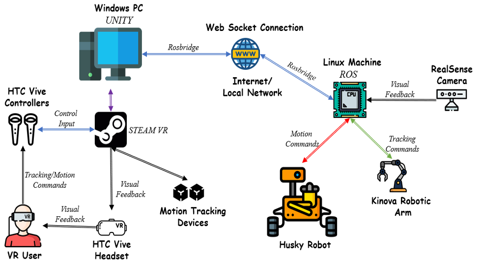
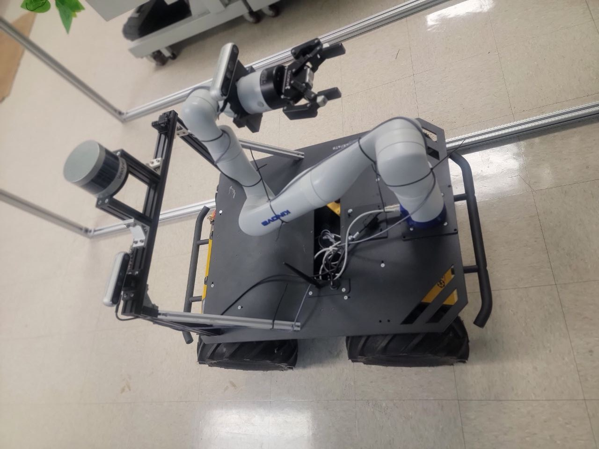

Background
The agricultural industry is undergoing a technological revolution driven by automation and robotics. With the rising demand for efficient and sustainable farming practices, there is a growing need for advanced solutions that can address challenges such as labor shortages, increasing production demands, and resource optimization. In this context, the integration of robotics and virtual reality (VR) technologies presents a promising avenue for enhancing agricultural operations.
The project focuses on the development and implementation of a cutting-edge system that combines a Husky Unmanned Ground Vehicle (UGV) and a Kinova Gen3 robotic arm, controlled through immersive virtual reality interfaces. The Husky UGV, renowned for its ruggedness, versatility, and mobility, serves as the mobile platform for navigating through agricultural environments, while the Kinova Gen3 arm provides dexterity and precision for performing various tasks such as fruit harvesting and crop inspection.
System Design

Components
Windows PC running Unity Engine: The Windows PC serves as the central computing unit responsible for running the Unity Engine, a powerful and versatile game development platform.
HTC Vive VR Controllers, Headset, and Motion Tracking Devices: The HTC Vive VR system consists of handheld controllers, a high-resolution headset, and motion tracking devices known as base stations.
Linux Machine running ROS (Robot Operating System): The Linux machine serves as the primary control system for the robotic components, running the Robot Operating System (ROS).
Husky UGV (Unmanned Ground Vehicle): The Husky UGV is a rugged and versatile mobile platform designed for outdoor environments.
Kinova Gen3 Arm: The Kinova Gen3 arm is a state-of-the-art robotic manipulator renowned for its dexterity, precision, and versatility.
RealSense Camera: The RealSense camera is a depth-sensing RGB-D camera developed by Intel. It provides depth perception and spatial awareness, allowing the robotic system to perceive and interact with its surroundings in three dimensions.
Together, these components form an integrated system for teleoperating a Husky UGV and Kinova Gen3 arm with VR technology, enabling immersive control and execution of agricultural tasks such as fruit harvesting and crop inspection with enhanced efficiency, precision, and adaptability.

System Development
Install ROS
The following instructions found on this link1 can be used to install ROS Noetic on Ubuntu 20.04
wget -c https://raw.githubusercontent.com/qboticslabs/ros_install_noetic/master/ros_install_noetic.sh && chmod +x ./ros_install_noetic.sh && ./ros_install_noetic.shInstall ROS#
ROS# provides Rosbridge server2 which offers a web-socket connection. This connection will eventually serve as a bridge between the local and remote work spaces.
$ sudo apt-get install ros-noetic-rosbridge-serverSetup Kinova and Realsense ROS nodes.
Clone this repository into catkin workspace
$ git clone https://github.com/daniel-udekwe/ROS_HUSKYKINOVA_ws.git
These steps complete the procedure for setting up the linux computer on the remote workspace. Now to the windows computer on the local workspace
- Download Unity Hub and install Unity 2021.3.16f1
- Download the project on this link, unzip it then open it in unity
- Locate and open Assets/Scenes/SampleScene.unity
This completes the setup of the remote and local workspaces. The next steps will involve starting and using the system to teleoperate the UGV and arm
Tele-operating the arm and UGV
On the linux computer enter the following commands;
cd ws_danielsource devel/setup.bashroslaunch kinova_ar kinovaAR.launchThese commands starts the rosbridge server on the linux computer, initializes the Kinova and Realsense nodes.
On the Windows PC of the local workspace, start the project, ensure that correct IP address is entered in the ROS connectors. Control the arm and UGV with the VR controllers.